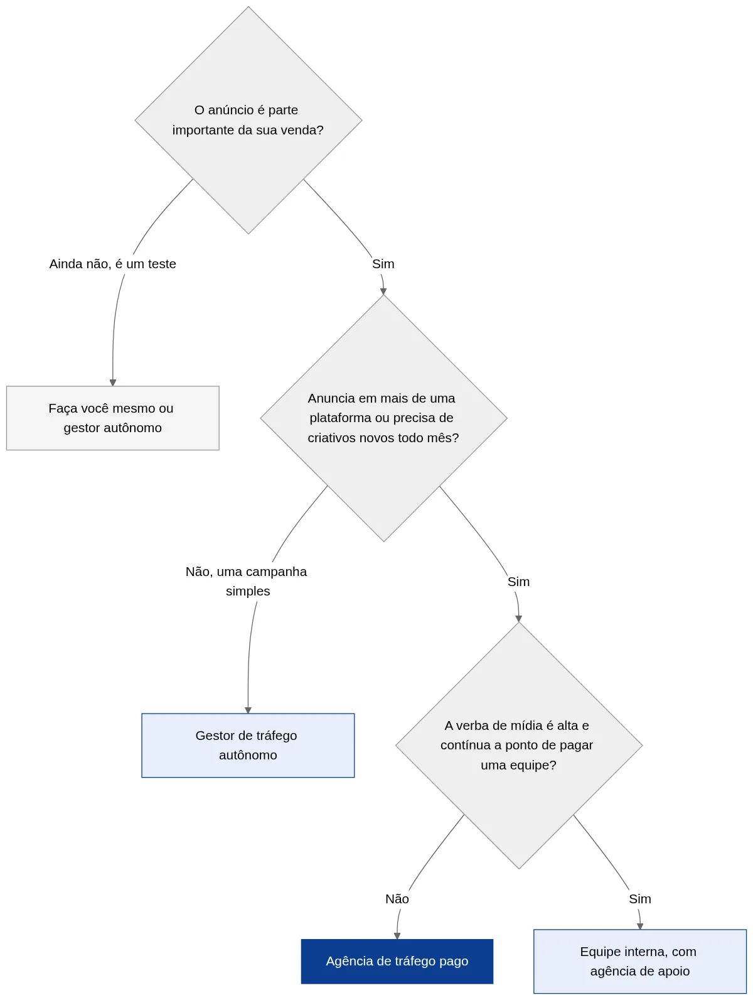

Agência de Tráfego Pago: O que Faz e Como Escolher
Quem decide anunciar na internet chega rápido a uma encruzilhada. Dá para fazer sozinho, contratar um gestor de tráfego autônomo ou uma agência de tráfego pago. Quem vende o serviço promete a mesma coisa, que é trazer clientes pelo Google e pelo Instagram. Na prática, cada caminho entrega um trabalho bem diferente. E, para empresas maiores, ainda existe a opção de montar equipe própria.
O problema é que, do lado de fora, é difícil saber o que você está comprando. Toda proposta fala em "estratégia", "otimização" e "resultado". Poucas explicam o que vai ser feito na sua conta toda semana.
Este guia abre essa caixa. Mostra o que uma agência de tráfego pago faz no dia a dia e quando ela compensa em relação às outras opções. Traz também as perguntas que você deve fazer antes de assinar e os sinais de que é melhor procurar outra.
O que é uma agência de tráfego pago
Tráfego pago é o nome que o mercado dá às visitas que chegam ao seu site, página ou WhatsApp por meio de anúncio. As plataformas mais usadas no Brasil são o Google Ads e o Meta Ads. O Google Ads mostra anúncios nas buscas, no YouTube e em sites parceiros, e o Meta Ads anuncia no Instagram, no Facebook e no WhatsApp.
Uma agência de tráfego pago é a empresa que planeja, cria, gerencia e mede essas campanhas para outros negócios. Na maioria dos contratos, você continua pagando a mídia direto para o Google ou para a Meta, no seu cartão ou boleto. A agência cobra pelo trabalho de fazer esse dinheiro render.
A diferença para um gestor autônomo não está na ferramenta, que é a mesma. Está em quem faz o quê. Numa agência estruturada, o trabalho costuma ser dividido entre pessoas: quem cuida da estratégia, quem opera as campanhas, quem escreve os anúncios, quem produz as imagens e vídeos e quem monta a medição.
Mídia e gestão são contas separadas. A mídia é o valor que vai para a plataforma e determina quantas pessoas veem o anúncio. A gestão é o honorário de quem opera. Uma proposta que mistura os dois num valor só dificulta saber quanto do seu dinheiro realmente virou anúncio.
O que a agência faz na sua conta, semana a semana
A parte mais invisível do serviço de uma agência de tráfego pago é também a mais importante. Campanha não é algo que se configura uma vez e fica rodando sozinho. O trabalho acontece em ciclos.
Antes do primeiro anúncio
Diagnóstico da oferta e do público. O que você vende, para quem, em que região, com que margem. Sem isso, qualquer campanha é chute.
Pesquisa de palavras-chave. No Google, é descobrir o que o seu cliente digita quando precisa de você e quanto custa aparecer para cada termo.
Escolha da plataforma. Nem todo negócio deve começar pelas duas. A lógica de decisão está no nosso comparativo entre Google Ads ou Meta Ads.
Revisão da página de destino. O anúncio leva a pessoa a algum lugar, e esse lugar precisa converter. Uma boa agência olha a página antes de gastar o seu dinheiro. Se ela não existir, a recomendação costuma ser criar uma landing page focada na oferta.
Instalação da medição. Códigos que avisam o Google e a Meta cada vez que alguém clica no WhatsApp ou envia o formulário (a tag de conversão e o pixel). Sem medição, ninguém sabe o que funcionou.
Toda semana
Leitura dos termos de busca. No Google, a agência vê quais buscas reais acionaram seus anúncios e bloqueia as que não têm nada a ver com você. É aqui que se corta boa parte do desperdício.
Ajuste de lances e orçamento. O lance é quanto você aceita pagar por clique. Sobe para o que traz contato e desce para o que só traz clique.
Troca de criativos (as imagens e vídeos dos anúncios). No Meta, esse material cansa. O mesmo anúncio mostrado muitas vezes para o mesmo público perde força, e a agência precisa renovar o material com frequência.
Testes. Um título contra outro, uma imagem contra outra, um público contra outro. Um teste por vez, para saber o que causou a diferença.
Todo mês
Relatório com números que importam. Quantos contatos, quanto custou cada um, quantos viraram venda quando você informa esse dado. Relatório que só mostra impressões (quantas vezes o anúncio apareceu) e cliques conta pouco sobre o seu negócio.
Reunião de revisão. O que funcionou, o que foi cortado e qual é o plano do próximo mês.
Se você quer saber como esse ciclo ficaria no seu negócio, fale com a Drive Digital. A gente começa pelo diagnóstico da oferta, antes de falar de verba.
Fazer sozinho, autônomo, agência ou equipe interna: qual compensa
Não existe resposta única. Cada modelo funciona bem num momento do negócio e mal em outro.

| Critério | Faça você mesmo | Gestor de tráfego autônomo | Agência de tráfego pago | Equipe interna |
|---|---|---|---|---|
| Custo mensal (gestão) | Só o seu tempo | Menor | Médio | Alto (salário e encargos) |
| Quem opera | Você | Uma pessoa | Equipe com funções divididas | Funcionários da empresa |
| Criação de anúncios e vídeos | Você | Às vezes, por fora | Normalmente incluída ou parceira | Depende de contratar designer |
| Se a pessoa sair ou adoecer | Para tudo | Para tudo | Outra pessoa assume | Precisa recontratar |
| Visão de outros negócios | Nenhuma | Alguma | Ampla, várias contas e nichos | Só o próprio negócio |
| Conhecimento profundo do seu negócio | Total | Médio | Médio, cresce com o tempo | Total |
| Faz sentido para | Teste com verba muito pequena | Negócio pequeno com uma campanha | Negócio que depende de anúncio para vender | Empresa com verba alta e contínua |
A faixa de honorários de cada modelo está detalhada no artigo sobre quanto custa tráfego pago. O resumo: um gestor autônomo iniciante costuma cobrar menos, e uma agência estruturada cobra mais porque entrega mais funções.
Quando o autônomo é a melhor escolha
Se você tem uma campanha só, numa plataforma só, com verba baixa, um bom gestor autônomo resolve. O risco é a dependência de uma pessoa. Se ela some, fica doente ou pega clientes demais, a sua conta para junto.
Quando a agência de tráfego pago compensa
A agência passa a fazer sentido quando o anúncio vira parte importante da venda. Isso costuma acontecer quando você anuncia em mais de uma plataforma ou precisa de criativos novos com frequência. Também vale quando você quer a página de destino e a medição tratadas junto com a campanha, ou simplesmente não pode ficar uma semana sem ninguém olhando a conta.
Outro ganho menos óbvio é a comparação. Uma agência que gerencia dezenas de contas percebe cedo quando o custo por clique sobe no setor inteiro, quando uma mudança do Google afeta todo mundo ou quando um formato novo começa a funcionar.
Quando montar equipe própria em vez de contratar agência de tráfego pago
Equipe interna faz sentido para empresas que investem alto e de forma contínua, a ponto de o custo de um ou dois profissionais dedicados ficar pequeno perto da verba de mídia. Mesmo nesses casos, muitas empresas mantêm uma agência para apoio, criação ou segunda opinião.
Como escolher uma agência de tráfego pago
A escolha errada custa caro de duas formas: no honorário pago e, principalmente, na mídia desperdiçada enquanto a campanha não funciona. Estas são as perguntas que vale fazer na primeira conversa.
As perguntas que separam as boas das outras
1. A conta de anúncio fica no meu nome? A resposta certa é sim. A conta do Google Ads e o portfólio empresarial da Meta (antigo Gerenciador de Negócios, o painel que reúne suas páginas e contas de anúncio) devem ser da sua empresa, com a agência entrando como parceira. Se a relação acabar, o histórico da conta, as listas de público e os dados de conversão ficam com você.
2. O que exatamente vocês fazem toda semana? Uma boa agência de tráfego pago descreve a rotina com clareza: termos de busca, lances, criativos, testes. Resposta vaga, do tipo "a gente otimiza", é sinal de pouco trabalho real.
3. Como vocês medem resultado? O indicador certo é custo por contato ou por venda, não número de cliques ou alcance. Se a agência não fala de medição de conversão na primeira conversa, desconfie.
4. Quem vai cuidar da minha conta? Pergunte o nome da pessoa e quantas contas ela gerencia. Agências que vendem com o sócio e operam com um estagiário sobrecarregado existem.
5. Vocês olham a página de destino e o atendimento? Boa parte dos problemas de campanha está depois do clique. Uma agência que só olha o painel de anúncios vai deixar esse dinheiro na mesa.
6. Qual é o prazo de fidelidade? Contratos com multa pesada e prazo longo logo no começo protegem a agência, não você. É razoável haver um período mínimo para a plataforma juntar dados sobre quem compra, geralmente de dois a três meses, mas não um ano travado.
7. Vocês têm casos parecidos com o meu? Experiência no seu tipo de negócio encurta o caminho. Peça exemplos reais, com números, mesmo que sem o nome do cliente.
Certificação ajuda, mas não decide. O programa Google Partners indica que a agência cumpre requisitos mínimos de desempenho das contas, de investimento gerenciado e de certificação da equipe. É um bom filtro inicial. O que decide é a rotina de trabalho e a transparência com os números.
Sinais de alerta antes e depois de contratar
Além das respostas às perguntas acima, algumas práticas de uma agência de tráfego pago deveriam acender a luz amarela na hora.
Promessa de resultado garantido. Nenhuma agência controla o leilão do Google, a disputa entre anunciantes por cada espaço de anúncio, nem o comportamento do seu cliente. Quem garante número fixo de vendas está vendendo desejo.
Relatório só com métricas de vaidade. Impressões, alcance e curtidas são fáceis de inflar. Se o relatório não mostra quanto custou cada contato, algo está sendo escondido ou simplesmente não está sendo medido.
Mudança de campanha todo dia. Parece dedicação, mas prejudica. As plataformas precisam de um período estável para aprender quem converte. Mexer sem parar reinicia esse aprendizado. Ajuste semanal com critério é rotina; mudança diária sem teste é ansiedade.
Verba de mídia paga para a agência sem nota detalhada. Em alguns modelos, a agência repassa a mídia, mas você precisa conseguir ver na plataforma quanto foi efetivamente investido.
| Sinal | O que pode significar | O que pedir |
|---|---|---|
| "Garantimos X vendas por mês" | Promessa comercial sem base | Casos reais com números e contexto |
| Conta no CNPJ da agência | Dependência total do fornecedor | Conta no seu nome, agência como parceira |
| Relatório sem custo por contato | Medição ausente ou resultado ruim | Custo por contato e por venda, mês a mês |
| Contrato de 12 meses com multa alta | Proteção da agência, não sua | Período mínimo curto, depois mês a mês |
| Nenhuma pergunta sobre página e atendimento | Visão limitada ao painel | Diagnóstico do que acontece depois do clique |
Um exemplo de como a escolha muda o resultado
Pense numa clínica de fisioterapia em Belo Horizonte que investe R$ 2.000 por mês em mídia no Google. Durante um ano, um sobrinho do dono cuidou da conta nas horas vagas. As campanhas mostravam anúncio para qualquer busca parecida (a correspondência ampla), não tinham lista de palavras bloqueadas (as negativas) e mandavam os anúncios levando para a página inicial do site.
Quando a clínica contratou uma agência de tráfego pago, a primeira semana não teve anúncio novo. Teve leitura dos termos de busca, e o que apareceu foi um volume grande de cliques de gente procurando curso de fisioterapia, vaga de emprego e exercício para fazer em casa. Ninguém ali queria marcar consulta.
O trabalho seguinte foi bloquear esses termos, separar as campanhas por especialidade, criar uma página de destino para cada uma e instalar a medição do clique no WhatsApp. A verba continuou a mesma. O que mudou foi para quem ela estava sendo gasta, e a partir daí os cliques de curioso deixam de dominar o relatório.
Esse é um caso ilustrativo, montado a partir de situações que aparecem com frequência em contas que recebemos. Os detalhes mudam de um negócio para outro, mas o padrão se repete: antes de pedir mais verba, uma boa agência de tráfego pago procura onde a verba atual está vazando.
O que esperar nos primeiros 90 dias
Expectativa desalinhada é a causa mais comum de rompimento entre o cliente e a agência de tráfego pago. Um horizonte realista ajuda os dois lados.
Primeiro mês: estrutura e aprendizado. Medição instalada, campanhas no ar, primeiros contatos. No Google, eles podem chegar já nos primeiros dias, porque a demanda já existe. No Meta, costuma haver uma fase de teste de criativos. O custo por contato ainda oscila bastante nesse período.
Segundo mês: corte e foco. Com dados reais, a agência corta palavras-chave, públicos e anúncios que não trouxeram resultado e concentra a verba no que funcionou. O custo por contato normalmente começa a cair.
Terceiro mês: estabilidade e escala. Com a campanha estável, dá para discutir aumento de verba, nova plataforma ou novos serviços. É também o momento certo para avaliar se a agência está entregando.
Uma coisa acelera muito esse processo: você informar à agência quais contatos viraram venda. Um CRM, o sistema onde você registra contatos e vendas, mesmo simples, permite saber quais anúncios trazem cliente e quais só trazem curioso. Com isso, a otimização deixa de mirar o contato e passa a mirar a venda.
Quer uma agência que trabalhe assim, com conta no seu nome e relatório de custo por contato? Conheça o serviço de links patrocinados da Drive Digital Se preferir, mande uma mensagem para a equipe.
Perguntas frequentes sobre agência de tráfego pago
O que faz uma agência de tráfego pago? Uma agência de tráfego pago planeja, cria, gerencia e mede campanhas de anúncio no Google, no Instagram, no Facebook e em outras plataformas. Na rotina, ela pesquisa palavras-chave, escreve anúncios, ajusta lances, corta desperdício, testa criativos e entrega relatórios com o custo de cada contato ou venda.
Qual a diferença entre agência de tráfego pago e gestor de tráfego? O gestor de tráfego costuma ser um profissional autônomo que opera as campanhas sozinho. A agência reúne várias pessoas com funções divididas, como estratégia, operação, criação e medição. A agência custa mais, mas reduz a dependência de uma pessoa só.
Quanto custa contratar uma agência de tráfego pago? Depende do tamanho da conta e do escopo. Agências estruturadas costumam cobrar um valor mensal fixo ou um percentual sobre a verba de mídia, e a mídia é paga à parte, direto para a plataforma. As faixas praticadas no Brasil estão no nosso artigo sobre quanto custa tráfego pago.
Em quanto tempo uma agência de tráfego pago traz resultado? No Google Ads, os primeiros contatos podem chegar na primeira semana. A campanha costuma estabilizar entre o segundo e o terceiro mês, quando já há dados suficientes para cortar o que não funciona e concentrar a verba no que traz cliente.
A conta de anúncios deve ficar no nome de quem? No nome da sua empresa. A agência entra como parceira com acesso de gestão. Assim, se o contrato terminar, o histórico da conta, as conversões registradas e os públicos criados continuam com você.
Como saber se a agência está fazendo um bom trabalho? Acompanhe o custo por contato e, se possível, o custo por venda, mês a mês. Peça para ver os termos de busca bloqueados e os testes realizados. Uma boa agência mostra o que fez e por quê, e não só o número de cliques.
Contrate rotina, não promessa
A melhor agência de tráfego pago para o seu negócio não é a que promete mais. É a que explica o que vai fazer toda semana, deixa a conta no seu nome, mede o custo de cada contato e se preocupa com o que acontece depois do clique.
Antes de assinar qualquer proposta, faça as sete perguntas deste guia. As respostas dizem mais sobre a agência do que qualquer apresentação comercial.
A Drive Digital gerencia campanhas de Google Ads e Meta Ads com a conta no nome do cliente. Também cuida da página de destino e da medição, e mostra o custo por contato em cada relatório. Se você quer uma conversa franca sobre o que dá para fazer com a sua verba, fale com a nossa equipe.